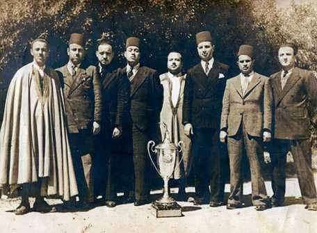

1er titre de l'Espérance : la coupe de Tunisie 1939
Sous le mandat de Zouiten, qui dure plus de trois décennies,
l'EST est plus ou moins au bord de l'abandon jusqu'à la promotion
en division d'honneur de la Ligue de Tunisie en 1936. L'EST parvient
également à se hisser en finale de la coupe de Tunisie mais le Stade
gaulois parvient à s'imposer. Trois ans après son échec face aux Gaulois,
l'EST s'impose en coupe de Tunisie (1939) face à l'Étoile sportive du Sahel (3-1).